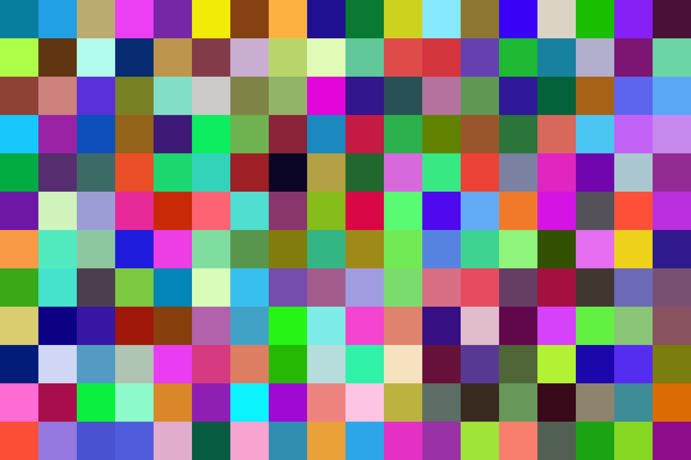

Kleurmodellen
Kleurmodellen zorgen ervoor dat we kleuren kunnen gebruiken voor verschillende electronica. Er zijn verschillende kleurmodellen ik ga vertellen over het RGB model en het CMY-K model.
RGB model
Het RGB model bestaat uit 3 kleuren: R voor Red, G voor Green en B voor Blue. Elke kleur kan van 0-255 aangepast worden. Hoe hoger dit getal, hoe feller de kleur is, door deze kleuren te mengen kan je heel veel verschillende kleuren maken namelijk 16.777.216. Als alle drie de kleuren samen maximaal worden gemengd krijg je de kleur wit.
CMY-K model
Het CMY-K model wordt onder anderen gebruikt voor printen. de letters CMY-K verwijzen naar de kleurplaten die in de printer zitten. De C voor Cyan, de M voor Magenta, de Y voor Yellow en de K voor Key (zwart). Als je al deze kleuren mengt krijg je zwart.

Pixels
Een pixel is een puntje op je scherm dat licht uit kan stralen. Wanneer heel veel pixels samenkomen onstaat er voor ons een beeld wat we kunnen zien. De maat voor de resolutie in pixels is ppi (pixels per inch) of px/mm (pixels per millimeter). Hoe hoger de waarde van een van de vorige maten, hoe meer detail er mogelijk is op het zelfde oppervlak. Een pixel is niet altijd vierkant en dat kan er dus voor zorgen dat de horizontale resolutie anders is dan de verticale. In een pixel zitten bits, hoe meer bits er in een pixel zitten hoe meer verschillende kleuren er mee gemaakt kunnen worden.
